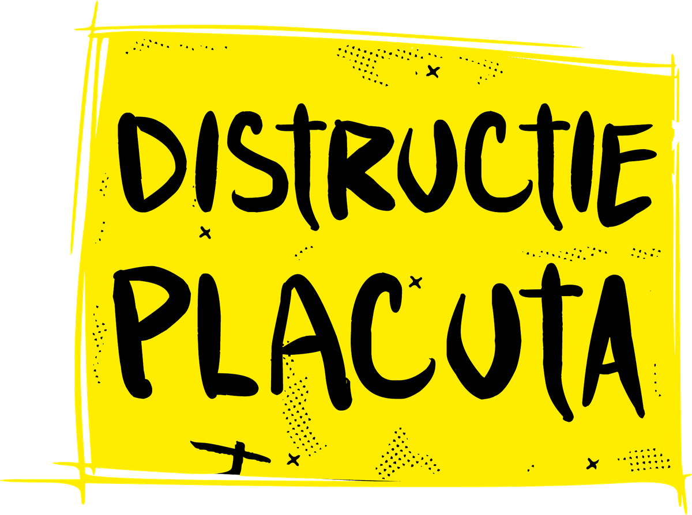
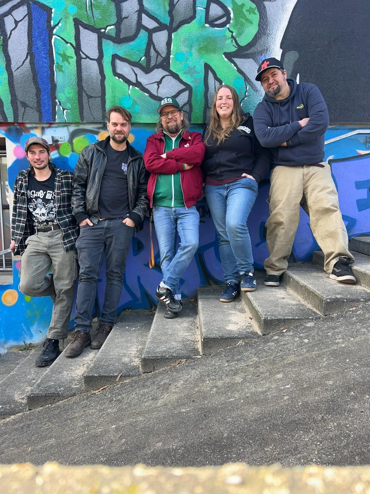

Different Music Same Idea


Vier Bands. Ein Ziel. Alle Einnahmen gehen an die Initiative Peisaj Deschis — ein Projekt, das die Kultur- und Naturlandschaft rund um Hosman und Südsiebenbürgen schützt.
Punk war nie nur Musik. Es geht um Gemeinschaft, darum, Dinge gemeinsam zu machen und Haltung zu zeigen. Komm zum Konzert, trink ein Bier, hör den Bands zu — und unterstütze die Sache.
Patru trupe. Un singur scop. Toate încasările merg către inițiativa Peisaj Deschis — un proiect care apără peisajul cultural și natural din zona Hosman și a Transilvaniei de sud.
Punk-ul n-a fost niciodată doar despre muzică. E despre comunitate, despre a face lucrurile împreună, despre a lua poziție. Vino la concert, bea o bere, ascultă trupele și susține cauza.
Four bands. One goal. All proceeds go to the Peisaj Deschis initiative — a project defending the cultural and natural landscape around Hosman and southern Transylvania.
Punk was never just about music. It's about community, about doing things together, about taking a stand. Come to the show, grab a beer, listen to the bands — and support the cause.
→ Different Music. Same Idea.

Limitierte Plätze · DIY or die Stoc limitat · DIY or die Limited stock · DIY or die
Hosman ist ein kleines Dorf im Kreis Sibiu, eingebettet in die malerische Landschaft Siebenbürgens — Teil des Hârtibaciu-Tals, bekannt für seine traditionellen sächsischen Dörfer und Kirchenburgen. So kommst du hin: Hosman este un sat mic din județul Sibiu, situat în peisajul pitoresc al Transilvaniei — parte din Valea Hârtibaciului, o zonă cunoscută pentru satele tradiționale săsești și bisericile fortificate. Iată cum ajungi: Hosman is a small village in Sibiu County, nestled in the picturesque Transylvanian countryside — part of the Hârtibaciu Valley, an area recognized for its traditional Saxon villages and fortified churches. Here's how to get there:
Das Festival findet im Dorf Hosman statt. In Google Maps öffnen → Festivalul are loc în frumosul sat Hosman. Deschide în Google Maps → The festival is located in the beautiful village of Hosman, Romania. Open in Google Maps →
Die bequemste Art, nach Hosman zu kommen. Vergiss die verpflichtende Mautgebühr nicht — die rovinietă — die du online, an Tankstellen oder direkt nach der Grenze kaufen kannst. Cel mai convenabil mod de a ajunge la Hosman. Nu uita de taxa de drum obligatorie — rovinieta — pe care o poți cumpăra online, la benzinării sau imediat după graniță. The most convenient way to reach Hosman. Don't forget the mandatory road tax — rovinietă — which can be bought online, at fuel stations, or right after the border.
Wir organisieren einen Bus-Shuttle von Sibiu direkt zum Festival. Platz online reservieren — der Link folgt, sobald das Datum näher rückt. Vom avea un serviciu de autobuz din Sibiu direct la festival. Poți rezerva un loc online — link-ul urmează pe măsură ce se apropie data. We'll run a bus service from Sibiu directly to the festival. Reserve your seat online — stay tuned for the link as the festival date approaches.
Der nächste Bahnhof ist Sibiu. Von dort nimmst du ein Taxi zum Festival oder versuchst dein Glück beim Trampen. Schau auf unseren Facebook- und Instagram-Seiten nach Mitfahrgelegenheiten. Cea mai apropiată gară este Sibiu. De acolo poți lua un taxi până la festival sau poți încerca autostopul. Urmărește paginile noastre de Facebook și Instagram pentru oportunități de autostop. Your nearest station is Sibiu. From there, take a taxi to the festival or try to hitchhike. Keep an eye on our Facebook and Instagram pages for hitchhiking opportunities and networking contacts.
Der nächste internationale Flughafen ist Sibiu Airport, bedient von Wizzair, Lufthansa und Austrian. Tägliche Flüge nach München und regelmäßig nach Wien, Dortmund, Memmingen, Karlsruhe, Nürnberg und London Luton. Cel mai apropiat aeroport internațional este Aeroportul Sibiu, deservit de Wizzair, Lufthansa și Austrian. Zboruri zilnice spre München și frecvente spre Viena, Dortmund, Memmingen, Karlsruhe, Nürnberg și London Luton. The nearest international airport is Sibiu Airport, served by Wizzair, Lufthansa and Austrian Airlines. Daily flights to Munich and frequent flights to Vienna, Dortmund, Memmingen, Karlsruhe, Nuremberg and London Luton.
Ebenfalls möglich: De luat în considerare: Also worth considering: Cluj-Napoca, Brașov, Timișoara, Târgu Mureș & București.
Hosman ist ein charmantes Dorf im Kreis Sibiu, eingebettet in die malerische Landschaft Siebenbürgens — bekannt für seine traditionellen sächsischen Dörfer und historischen Kirchenburgen. Das Event findet etwa 20 Minuten von der Stadt Sibiu entfernt statt. Hosman este un sat fermecător din județul Sibiu, situat în peisajul pitoresc al Transilvaniei — renumit pentru satele tradiționale săsești și bisericile fortificate. Evenimentul are loc la aproximativ 20 de minute de orașul Sibiu. Hosman is a charming village in Sibiu County, nestled in the scenic Transylvanian countryside — known for its traditional Saxon villages and historic fortified churches. The event takes place about 20 minutes from the city of Sibiu.